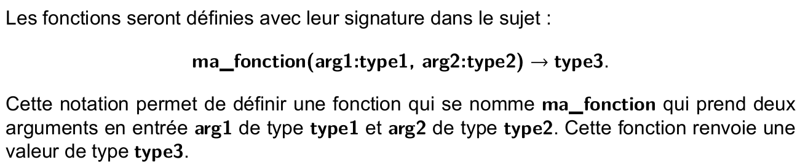

C4 Discipline de programmation ¶
Exemple introductif¶
On considère la fonction suivante :
Pour chacun des appels suivants, quel sera le résultat renvoyé par cette fonction ?
imax([12, 18, 11, 9, 10])imax([7, 7, 7, 7])imax([-11, -15, -3])imax([])
Selon vous, ces résultats sont-ils ceux attendus par le concepteur de la fonction ?
D√©finitions¶
L'exemple introductif ci-dessus est celui d'une fonction sans spécification, c'est-à-dire qu'on ne dispose pas d'une description formelle et détaillée de ses caractéristiques, en particulier, on ne sait pas :
- quel est le type des arguments et quelles sont leurs valeurs admissibles, c'est ce qu'on appelle les préconditions.
- ce que renvoie la fonction, ni si elle produit d'autres effets (affichages, modification des arguments, ...), c'est ce qu'on appelle les postconditions
En Python, l'usage est :
- de fournir une spécification sous la forme d'une docstring c'est-à-dire d'une chaine de caractères écrite entre trois guillemets et située immédiatement après la ligne du
defde la fonction. Cette docstring précise les types attendus en entrée pour les arguments et le type renvoyé. - d'inclure des vérification des postconditions et des préconditions, si ces vérifications échouent le programme s'arrête en produisant un message d'erreur. Ces verifications sont effectuées à l'aide d'instructions
assertqui prennent la forme suivante :assert <condition>, <message d'erreur>. Par exempleassert len(l) != 0, "La liste doit être non vide"vérifie que la listeln'est pas vide, dans le cas contraire le programme s'arrête avec le message "La liste doit être non vide" -
d'indiquer dans le code même de la fonction des annotations de type. c'est-à-dire qu'après chaque argument d'une fonction, on indique son type précédé du caractère
:et qu'on indique le type renvoyé par la fonction en le précédant de->. Par exemple, une fonctionexempleprenant en argument une listelet un entiernet renvoyant un booléen s'écrira :def exemple(l : list, n: int) -> boolNote
Ces annotations de type ne sont ni obligatoires ni vérifiées à l'execution, cependant dans les sujets de concours récents (depuis 2023), elles apparaissent régulièrement à titre d'exemples :
- un extrait du sujet CCMP de 2024 :

- un extrait du sujet CCINP de 2024 : 
- un extrait du sujet CCMP de 2024 :
Retour sur l'exemple¶
L'exemple donné ci-dessous, devrait donc plutôt s'écrire :
- La signature de la fonction inclus maintenant les annotations de type et elle est suivie par une spécification de la fonction.
- Les instructions
assertpermettant de vérifier les préconditions - Grâce à la précondition, on peut accéder sans risque à
l[0]car on sait que la liste contient au moins un élément.
Le comportement correct d'une fonction peut être validé (mais pas prouvé) par l'utilisation d'un jeu de test. c'est-à-dire un ensemble de couple d'entrées de la fonction et de sorties attendues. On teste en particulier les cas limites (edge cases en anglais), par exemple dans le cas d'une fonction travaillant sur les listes, le cas des listes vides ou réduites à un seul élément. Les instructions assert permettent de vérifier que la fonction passe les tests. Dans le cas de la fonction ci-dessus, on pourrait par exemple ajouter les tests suivants :
# Test avec une liste contenant un unique élément :
assert imax([15]) == 0
# Test avec un maximum négatif
assert imax([-12,-3,-15]) == 1
# Test avec le maximum situé en dernière position
assert imax([1, 9, 5, 2, 10]) == 4
# Test avec plusieurs occurences du maximum
assert imax([1, 2, 7, 7, 3, 7, 4, 7]) == 2
Exercices de synth√®se¶
 Exercice 1 : Ecrire la sp√©cification d'une fonction¶
Exercice 1 : Ecrire la sp√©cification d'une fonction¶
On considère la fonction Python suivante :
- Prédire la valeur renvoyée par
cherche_position("Y",["P","Y","T","H","O","N"])puis vérifier en testant la fonction. - Même question pour
cherche_position("A",["P","Y","T","H","O","N"]) - Même question pour
cherche_position("M",["P","R","O","G","R","A","M","M","E"]) - Que fait cette fonction ? Ecrire sa chaîne de documentation.
- Ajouter les annonations de type à cette fonction.
- Proposer des tests afin de valider le comportement de cette fonction.
Exercice 2 : Puissance¶
Pour un exercice demandant d'écrire une fonction puissance qui prend entrée un nombre x et un entier n et renvoie \(x^n\), un étudiant a écrit :
- Compléter cette fonction en rajoutant sa spécification.
- Proposer des tests montrant que cette fonction ne respecte pas complètement sa spécification.
- Corriger cette fonction et proposer un jeu de tests.
Exercice 3 : Nombre de chiffres d'un entier positif¶
- Ecrire une fonction
nombre_chiffres(n : int) -> intqui prend en entrée un entier positif et renvoie son nombre de chiffres. Par exemplenombre_chiffres(212)doit renvoyer 3 - Ecrire les préconditions sous la forme d'instructions
assert - Proposer un jeu de test pour cette fonction.
Exercice 4 : R√©p√©tition dans une liste¶
- Ecrire une fonction
contient_repetition(l : list) -> boolqui renvoieTruesi la liste donnée en argument contient le même élément répété à la suite. Par exemplecontient_repetition([2, 5, 5, 3])renvoieTruemaiscontient_repetition([2, 5, 3, 5])renvoieFalse - Proposer un jeu de test pour cette fonction
S'entrainer sur CodEx¶
Le site CodEx est un site d’entraînement à la programmation Python, un exercice :
- demande généralement d'écrire une fonction répondant à une spécification précise
- inclus des tests visibles sous la forme d'instructions
assertde façon à valider une première fois votre fonction - inclus des tests cachés qui permettent de valider définitivement votre fonction
- inclus généralement une solution et des conseils qui apparaissent après réussite ou cinq essais infructueux de validation.
Voici quelques exercices à faire pour vous entrainer, mais vous pouvez en chercher d'autres en évitant les thèmes que nous n'avons pas encore abordés :